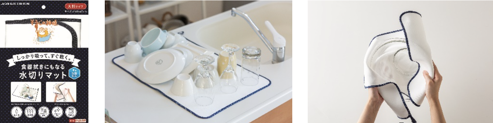
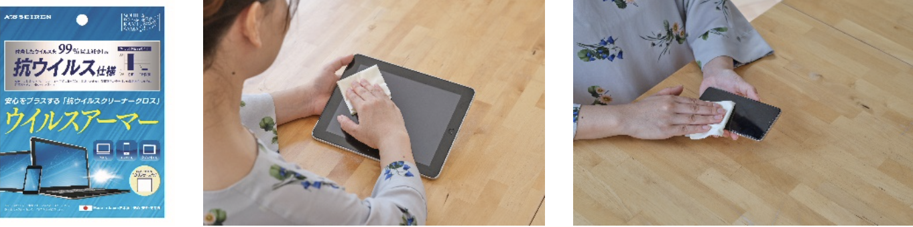

そうじの神様シリーズに新商品が加わりました。
【商品概要】
■食器拭きにもなる水切りマット 大判タイプ
内容：表裏マイクロファイバーを使用したダンボールニット素材
サイズ：約600mm×400mm（従来比2倍サイズ）
入数：1枚入
価格：1800円（税込1980円）
組成：複合繊維（ポリエステル、ナイロン）
用途：食器・調理器具などの洗浄後の水切り用途として。洗浄後の食器類の水気やくもりの拭き取り用途として。
従来品の大判サイズが欲しいという消費者の声を反映して商品化。

■抗ウイルスクリーナークロス ウイルスアーマー
内容：マイクロファイバークロス
サイズ：約150mm×150mm
入数：1枚入
価格：500円（税込550円）
組成：複合繊維（ポリエステル、ナイロン）
用途：モバイル端末などのクリーナー用途として。時代のニーズを反映して商品化。
繊維上に付着した特定のウイルスを99%以上減少させます。
※すべてのウイルスで検証されているわけでもありません。

【購入方法】
全国の専門店、GMS、HCなどで順次取り扱い開始
他快適リビングショップ、amazon、楽天などネットショップにても順次開始
そうじの神様ホームページはこちら
https://www.souji-no-kamisama.com/
お問い合わせ先
KBセーレン株式会社
広報窓口 06-6345-5204